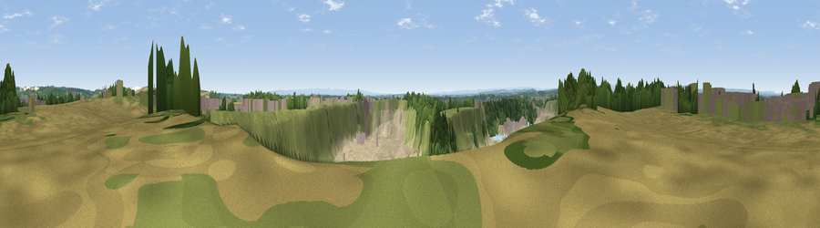

Viewpoint near Cornforth
#11986 in England · top 20% of its area beats it · near CornforthWhere it is
The exact computed spot (NZ 31975 33475). Click the marker for map links.
The view, rendered

A 360° render of this exact spot computed from the terrain model, tree cover and land cover — summer colours, afternoon light, calibrated against photographs of famous viewpoints. Real trees, hedges and buildings will differ in detail.
The panorama
Grey silhouette: terrain skyline in each direction (720 bearings, Earth curvature and refraction included). Dashed green: skyline with trees (+15 m) and buildings (+8 m) as obstacles. Blue strip: how far the ground is visible on each bearing.
Where the view opens
Wedge length = distance to the farthest visible ground on that bearing (vegetation-aware). Rings at 10, 25 and 50 km.
What fills the view
42% bare ground · 28% grassland · 14% cropland · 9% woodland · 5% built-up · 3% water
Angular shares of the visible panorama (visual magnitude), not map area. Landscape diversity 0.63 (0–1 Shannon).
Key numbers
More beautiful places nearby
The staircase of upgrades: each row has a higher view potential than everything closer. Driving times are estimates from straight-line distance, calibrated against real road routing — check an actual route before setting out.
| Place | Direction | Drive | Score |
|---|---|---|---|
| Viewpoint near Bishop Middleham | SE · 1 km | ~3 min | 61.1 |
| Viewpoint near Kelloe | ENE · 2 km | ~5 min | 64.6 |
| Catley Hill | E · 4 km | ~10 min | 67.4 |
| Viewpoint near Quarrington Hill | NNE · 5 km | ~11 min | 73.1 |
| Viewpoint near Easington Colliery | NE · 17 km | ~30 min | 74.4 |
| Viewpoint near Houghton-le-Spring | NNE · 18 km | ~31 min | 76.0 |
| Pontop Pike | NW · 26 km | ~42 min | 77.8 |
| Viewpoint near Newton Under Roseberry | SE · 28 km | ~45 min | 78.3 |
54.69530, -1.50543 · source: screening · position refined by local search. Computed location — check access rights before visiting.